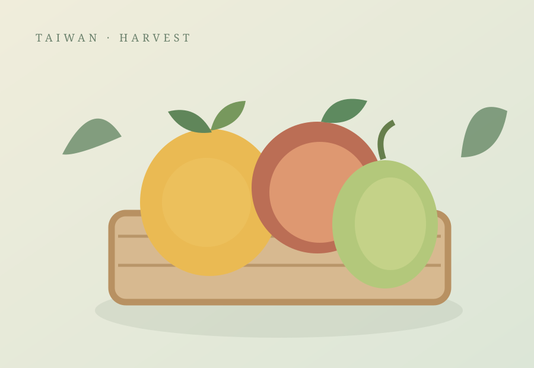

TAIWAN PREMIUM FRUITS
認識台灣的季節風味
台灣不同地區的氣候與栽培條件，形成多樣的水果產季與風味特色。本頁將用來介紹紅洋實際選定的水果品種、產地與相關故事。
待確認正式供應資料後，可逐步新增水果品種、季節資訊、產區說明及產品照片。
- 水果品種：待確認
- 產地與供應資訊：待確認
- 等級與包裝形式：保留彈性
- 上市季節與配送方式：待確認
本頁為商品類別介紹，不表示特定水果目前有貨或開放訂購。
分享台灣水果的產地特色、季節與不同品種的風味。

台灣不同地區的氣候與栽培條件，形成多樣的水果產季與風味特色。本頁將用來介紹紅洋實際選定的水果品種、產地與相關故事。
待確認正式供應資料後，可逐步新增水果品種、季節資訊、產區說明及產品照片。